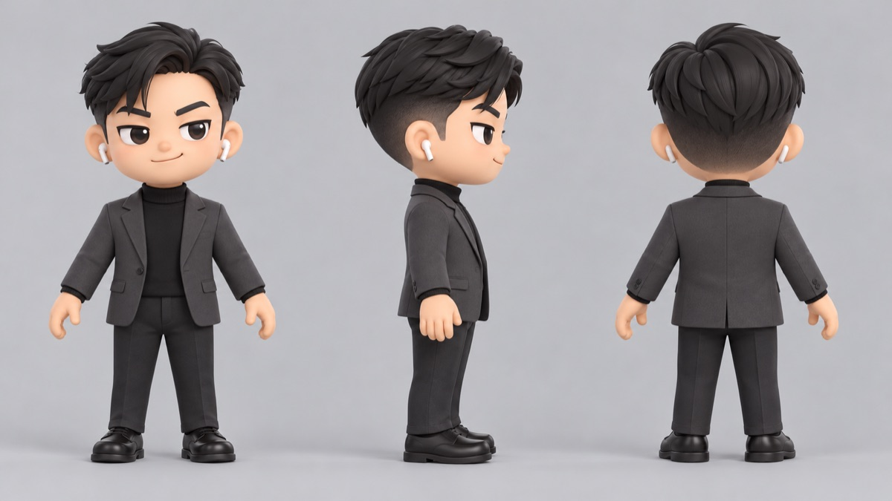
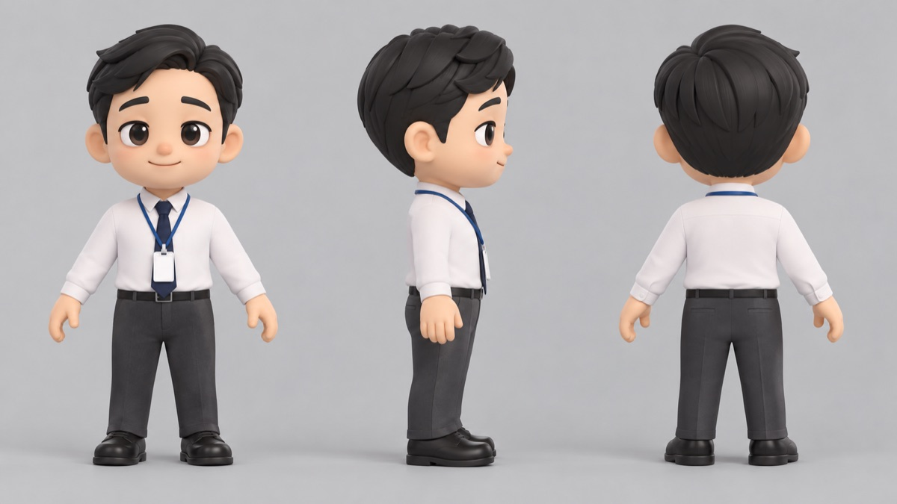

讓 Claude 幫你叫 GPT 畫圖：從企劃圖到角色三視圖
Claude 自己不會畫圖，但它可以替你操作 ChatGPT 的畫圖功能：寫提示詞、一次排好幾張、把圖收進資料夾。例子是《上班啟示錄》的角色設計。
本課步驟（8 步）
常見卡關 · 影片大綱- ChatGPT 桌面版裡藏著一個叫
codex的指令工具，Claude 可以用它叫 GPT 畫圖 - 怎麼請 Claude 畫企劃圖、角色三視圖
- 真人照片只當造型參考，怎麼變成原創角色
- 一次畫一整批、挑錯、重畫
安裝 ChatGPT 桌面版並登入
到 chatgpt.com/download 下載桌面版，安裝後用你的 ChatGPT 帳號登入。
裝好之後，電腦裡就有一個叫 codex 的指令工具（放在 ChatGPT 這個 app 裡面）。你不用自己打開它，Claude 會在背景叫它。
畫圖用的是你自己 ChatGPT 帳號的額度，不會花 Claude 的額度。額度多少看你的 ChatGPT 方案。
跟 Claude 說：以後畫圖用 GPT
第一次只要講一次，Claude 會記在記憶裡：
以後要畫靜態圖片，都用 ChatGPT 裡的 codex 幫我畫，不要用別的服務。畫好的圖放到這個作品的 design 資料夾。
第一次叫 codex 時，Claude 可能會跳出權限詢問（要執行 ChatGPT 裡的程式），允許就好。
Claude 實際下的指令（看得懂就好）
這是《上班啟示錄》真正用的指令，你不用背，知道它在做什麼就好：
/Applications/ChatGPT.app/Contents/Resources/codex-cli/bin/codex exec --skip-git-repo-check "Generate one image with your image generation tool: <提示詞>" -i 參考圖.png < /dev/null| 這一段 | 意思 |
|---|---|
…/ChatGPT.app/…/codex | ChatGPT 桌面版裡附的指令工具 |
exec | 「幫我做這件事」，做完就結束 |
"Generate one image …" | 提示詞：要畫什麼 |
-i 參考圖.png | 附上參考圖（可以好幾張） |
畫好的圖會先存在 ~/.codex/generated_images/ 底下，Claude 再把它複製到作品的 design 資料夾、改成好認的檔名。
先畫企劃圖，決定要做什麼
畫角色三視圖
要轉成 3D 的角色，要畫成三視圖：同一個角色正面、側面、背面並排在一張圖裡。提示詞的重點（Claude 會幫你寫成英文）：
- 軟膠公仔、黏土質感，大頭 Q 版（頭大約佔身高三分之一）
- 一張圖並排三個視角：正面、面向右的側面、背面
- 站成 A 字形，手微微張開、腳微微打開，全身入鏡
- 淺灰色素背景、不要文字；手上不拿東西、脖子不要扭
- 髮型、眼鏡、衣服照參考，不要自己加飾品

真人照片只當造型參考，畫成原創角色
有時候你想要「像某個人那種穿搭」。真人照片可以給 Claude 看，但不要直接拿去當角色的臉。正確流程是：Claude 看照片，把造型寫成文字描述，再請 GPT 照文字畫一個原創公仔。畫風則拿已經畫好的原創角色當參考。
特助 Kevin 就是這樣來的：
不公開、不上傳、不當畫圖參考


這張照片只是造型參考，不要畫成照片裡的人。把他的髮型和穿搭寫成文字，畫一個原創公仔三視圖，畫風參考上班族男生那張。
直接拿真人照片去畫，臉和衣服會跟本人一模一樣，有肖像權的問題。真人照片留在自己電腦（例如 work/refs/ 這種不會上傳的資料夾），教學、截圖、上傳都不要放。
一次畫一整批
角色多的時候，Claude 會把每個角色的提示詞存成一個檔案，再寫一個小程式一次跑完。《上班啟示錄》的做法：
work/jobs/資料夾：每個角色一個.prompt檔（提示詞），要附參考圖的再放一個.refs檔work/gen2.sh：讀提示詞、叫 codex 畫圖、把成品存成design/d_角色名.png- 兩張同時畫時，Claude 會用每次的「工作編號」去找對應的圖，不會拿錯
再幫我畫四個備用角色，造型照這四張參考照片，一樣是公仔三視圖、原創臉。畫完排成一張總覽圖給我看。

看圖、挑錯、請它重畫
Claude 說找不到 codex：ChatGPT 桌面版沒裝、沒登入，或版本太舊。打開 ChatGPT 更新一下再試。
提示詞好像被吃掉了，畫出奇怪的東西：提示詞要放在 -i 參考圖 前面。跟 Claude 說「提示詞放在 -i 前面」，它就會改。
圖不知道跑去哪：先找 ~/.codex/generated_images/，或直接問 Claude「剛剛那張圖在哪？」。
想要直式或橫式：長寬比要寫在提示詞裡，例如「9:16 直式」。
額度用完、一直失敗：ChatGPT 的生圖額度用完了，等額度恢復或換方案。可以請 Claude 先畫最重要的幾張。
角色長得跟參考照片的人一樣：表示拿真人照片當參考圖了。請它改成「只用文字描述造型、畫風參考原創角色」重畫。
| 鏡頭 | 畫面 | 旁白重點 |
|---|---|---|
| 1 | 角色三視圖總覽慢慢推近 | 「這些角色都是 GPT 畫的，但我一次都沒打開 ChatGPT。」 |
| 2 | 流程動畫：你 → Claude → GPT → 資料夾 | Claude 替你操作 ChatGPT 裡的 codex |
| 3 | chatgpt.com/download、安裝、登入 | 裝好 ChatGPT 桌面版就有 codex；用的是你的 ChatGPT 額度 |
| 4 | 打字「以後畫圖都用 GPT」 | 講一次，Claude 會記住 |
| 5 | 指令放大，逐段標註 | 看得懂就好：exec、提示詞、-i 參考圖 |
| 6 | 企劃圖四格，劃掉戰鬥和怪物 | 先畫企劃圖決定方向 |
| 7 | 三視圖重點條列＋小葵三視圖 | A 字站姿、空手、灰背景、不要飾品 |
| 8 | 鎖頭框 → 文字描述 → Kevin（不出現真人照） | 真人照只當造型參考，畫成原創公仔 |
| 9 | 備用角色庫一張張出現 | 一次畫一整批 |
| 10 | 回頭看鏡頭的失敗例（可用文字示意）→ 重畫 | 看圖挑錯，直接說哪裡要改 |